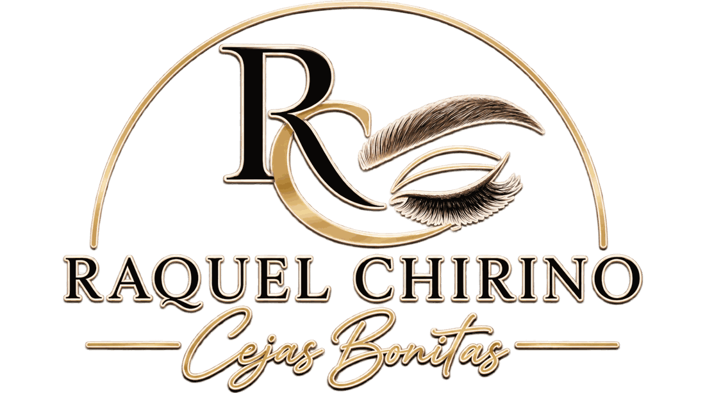

VISAGE
Visajismo facial asistido
Rostro de frente · Mirada al lente · Cejas despejadas
Iniciar escaneo
🔇 Sonido
VISAGE · MAPA FACIAL
Iniciando...
Buscando rostro...
La aplicación debe completar el reconocimiento primero.
Dibujar
VISAGE
Analizando facciones
Procesando diseño...
0%
Tono de piel identificado
Sin lectura
Fórmula recomendada
Por definir
Tiempo de aplicación
Por definir
Nuevo Escaneo